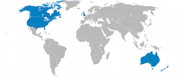
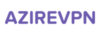
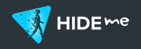
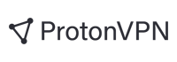
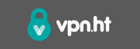
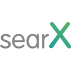
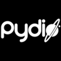
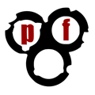

За тобой следят. Частные и спонсированные государством организации собирают данные о твоей Интернет-активности. Privacytools.ru дает тебе необходимые знания и инструменты для защиты твоей приватности от глобальной массовой слежки.
На других языках: English 繁體中文 Español Deutsch Italiano
Приватность? Мне нечего скрывать.
За последние 16 месяцев, что я обсуждал проблемы приватности по всему миру, каждый долбаный раз, когда кто-либо говорил мне, "Я не переживаю из-за возможной слежки, потому что мне нечего скрывать", я всегда говорил им одно и то же. Я доставал ручку, писал на листке бумаги свой email-адрес и говорил: "Вот мой email. Когда придешь домой, пришли мне пароли от ВСЕХ своих аккаунтов - как рабочих, так и личных, чтобы я имел возможность посмотреть, чем ты занимаешься, узнать о тебе все, что захочу, и опубликовать то, что посчитаю нужным. В конце концов, если ты законопослушный гражданин, который не делает ничего плохого, тебе ведь нечего скрывать?" Ни один из них не принял этого предложения.
См. также:
UKUS SIGINT - соглашение между Великобританией, США, Австралией, Канадой и Новой Зеландией по совместному сбору, анализу и обмену разведывательной информации. Члены этой группы, известные как "Пять глаз", занимаются сбором и анализом данных в разных частях света. Несмотря на то, что страны "Пяти глаз" договорились не шпионить друг за другом, утечки Сноудена продемонстрировали, что некоторые члены проводили слежку за гражданами других стран группы, чтобы избежать нарушения национального законодательства, запрещающего слежку за своими гражданами. Альянс "Пяти глаз" также сотрудничает с группой третьих стран для обмена информацией (т.н. альянсы "Девяти глаз" и "Четырнадцати глаз"), однако "Пять глаз" и третьи страны также могут осуществлять и осуществляют шпионаж в отношении друг друга.
Пять глаз
2. Канада
3. Новая Зеландия
4. Великобритания
5. Соединенные Штаты Америки
Девять глаз
7. Франция
8. Нидерланды
9. Норвегия
Четырнадцать глаз
11. Германия
12. Италия
13. Испания
14. Швеция
Почему не стоит использовать сервисы, расположенные в США?
Мы не рекомендуем использовать американские сервисы из-за государственных программ слежки и запрета для компаний на публикацию запросов, касающихся национальной безопасности (т.н. "gag orders"). Такая связка позволяет государственным структурам получать неограниченный доступ к пользовательским данным без их ведома и использовать компании как средства массовой слежки.
Громким инцидентом стало дело Lavabit - уже не активного безопасного почтового сервиса, созданного Ладаром Левисоном. ФБР потребовало предоставить данные Сноудена, являвшегося одним из пользователей сервиса. Поскольку в Lavabit не хранились логи, а вся пользовательская переписка была зашифрована, ФБР воспользовалось правом "gag order" и потребовало предоставить SSL-ключи, позволявшие им получить полный доступ к незашифрованным пользовательским данным в реальном времени, причем не тольку Сноудена, но и всех остальных пользователей.
Левисон отказался предоставить ключи и закрыл сервис, что было трактовано правительством США как нарушение постановления приговора с угрозой ареста для автора.
Дополнительная информация
- Избегай сервисов из Великобритании и США
- Proof that warrant canaries work based on the surespot example.
- https://ru.wikipedia.org/wiki/UKUS_SIGINT
- https://ru.wikipedia.org/wiki/Lavabit#%D0%98%D1%81%D1%82%D0%BE%D1%80%D0%B8%D1%8F
- https://en.wikipedia.org/wiki/Key_disclosure_law
- http://en.wikipedia.org/wiki/Portal:Mass_surveillance
| Таблица провайдеров VPN | Цена в год | Пробный период | Количество серверов | Юрисдикция | Веб-сайт |
|---|---|---|---|---|---|
 |
54 € | Да | 162 | Италия | AirVPN.org |
|  | 45 € | Да | 5 | Швеция | AzireVPN.com |

|
99 € | Да | 27 | Гонконг | blackVPN.com |

|
$ 52 | Да | 18 | Исландия | Cryptostorm.is |

|
39,99 € | Нет | 432 | Северный Кипр | EarthVPN.com |
| $ 99.95 | Да | 145 | Виргинские острова | ExpressVPN.com | |

|
$ 35.88 | Нет | 27 | Швеция | FrootVPN.com |
|  | $ 65.04 | Да | 88 | Малайзия | hide.me |

|
$ 100 | Да | 21 | Гибралтар | IVPN.net |

|
60 € | Да | 168 | Швеция | Mullvad.net |

|
$ 69 | Да | 475 | Панама | NordVPN.com |
| $ 84 | Да | 39 | Швеция | OVPN.com | |

|
124.95 € | Нет | 41 | Панама | Perfect-Privacy.com |
|  | Free | Да | 112 | Швейцария | ProtonVPN.com |

|
$ 90 | Нет | 300 | Сейшельские Острова | Proxy.sh |

|
$ 39.95 | Да | 48 | Сейшельские Острова | Trust.Zone |
|  | $ 39.99 | Нет | 122 | Гонконг | VPN.ht |

|
$ 35.88 | Нет | 80 | Сейшельские Острова | VPNTunnel.com |
Критерии выбора VPN-провайдеров
- Расположены за пределами США и других стран "Пяти глаз".
См. также: Избегай сервисов из Великобритании и США. - Поддержка OpenVPN.
- Возможность оплаты в биткоинах, наличными, дебетовыми, либо предоплаченными картами.
- Для создания аккаунта не нужны персональные данные, кроме имени пользователя, пароля и email-адреса.
Мы не аффилированы ни с одним из вышеперечисленных VPN провайдеров. Мы верим, что только таким способом можно дать честные рекомендации.
Другие VPN-провайдеры
Таблица с независимым анализом более 100 VPN-сервисов. (Обсуждение на Reddit)
Дополнительная информация
- Which VPN Services Keep You Anonymous in 2018?
(Note: The providers listed first in the TorrentFreaks article are sponsored) - How To Make VPNs Even More Secure
- Can you trust a VPN to protect your privacy? - SpiderOak
- Beware of False Reviews - VPN Marketing and Affiliate Programs
- I am Anonymous When I Use a VPN - 7 Myths Debunked
(Note: While this is a good read, they also use the article for self promotion) - Proxy.sh VPN Provider Sniffed Server Traffic to Catch Hacker
- Ethical policy - All of the reasons why Proxy.sh might enable logging
- IVPN.net will collect your email and IP address after sign up
Read the Email statement from IVPN. - blackVPN announced to delete connection logs after disconnection
- Don't use LT2P IPSec, use other protocols.
"Свидетельство канарейки" - способ передачи информации, осуществляемый через молчание или отрицание. Согласно "Патриотическому акту", правительство США может направить секретный ордер провайдеру на слежку за пользователем. Закон запрещает компании разглашать факт существования подобного ордера, однако компания может обойти этот запрет, не нарушив при этом закона: компания может уведомлять пользователя о том, что за ним в определённый момент не велось скрытого наблюдения — подобная фраза может быть указана в каком-либо отчёте компании пользователю. Если же компания получила ордер, такого уведомления в отчёте не будет.
Примеры "свидетельств канареек":
- https://proxy.sh/canary
- https://www.ivpn.net/resources/canary.txt
- https://www.vpnsecure.me/files/canary.txt
- https://www.bolehvpn.net/canary.txt
- https://lokun.is/canary.txt
- https://www.ipredator.se/static/downloads/canary.txt
Дополнительная информация
- Warrant Canary Frequently Asked Questions
- Companies and organizations with warrant canaries
- Warrant canary criticism by Bruce Schneier and an example of a law against warrant canaries.
Mozilla Firefox
 Firefox - быстрый и безопасный браузер с открытым исходным кодом, позволяющий защитить приватность в Интернете. См. также: рекомендуемые настройки
WebRTC и about:config и дополнительные аддоны приватности.
Firefox - быстрый и безопасный браузер с открытым исходным кодом, позволяющий защитить приватность в Интернете. См. также: рекомендуемые настройки
WebRTC и about:config и дополнительные аддоны приватности.
OS: Windows, Mac, Linux, Android, BSD.
 Браузер с открытым исходным кодом, автоматически блокирующий рекламу и трекеры и ориентированный на безопасность пользователя. Основан на Хромиум.
Браузер с открытым исходным кодом, автоматически блокирующий рекламу и трекеры и ориентированный на безопасность пользователя. Основан на Хромиум.
При открытии произвольной веб-страницы браузер отправляет такие метаданные как доступные шрифты, тип браузера и расширения. Если набор данных уникален, его можно использовать для идентификации пользователя даже при отсутствии кук. EFF создало утилиту Panopticlick для проверки уникальности отпечатка твоего браузера.
Для защиты конфиденциальности необходимо понимать, какие данные (шрифты, плагины и расширения) отправляются большинством браузеров, а затем использовать те же значения, чтобы маскироваться под основную массу пользователей. Это означает, что строка User Agent должна быть подменена на ту, что используется большинством, настройки должны соответствовать конфигурации по умолчанию (например, DNT и WebGL) и т.д. Отключив JavaScript, используя Linux или Tor Browser, ты сильно выделяешься из толпы.
Современные браузеры не были созданы с целью защиты пользовательской приватности. Мы рекомендуем использовать бесплатные расширения такие как Privacy Badger, uBlock Origin и Disconnect - с их помощью можно анонимизировать браузерный отпечаток и повысить приватность.
Дополнительная информация
- Насколько уникален твой браузер? Peter Eckersley, EFF.
- Присоединяйся к обсуждению идентификации по браузерным отпечаткам на reddit.com.
- Наша секция расширений приватности Firefox.
- BrowserLeaks.com - Утилиты тестирования браузера, которые раскрывают, какие именно данные отправляются наружу при переходе на произвольную страницу.
Несмотря на то, что некоторые аддоны (например, NoScript) позволяют избежать утечки IP, может иметь смысл все равно отключить WebRTC "на всякий случай".
Как отключить WebRTC в Firefox?
В двух словах: измени значение настройки "media.peerconnection.enabled" на "false" в "about:config".
Шаг за шагом:
- Введи "about:config" в адресную строку Firefox и нажми Enter.
- Кликни "Я принимаю на себя риск!"
- В поиске набери "media.peerconnection.enabled"
- Дважды кликни на выбранную настройку и убедись, что поле "Значение" установлено в "false"
- Готово. Проверь свой браузер снова.
Для полной уверенности, что все связанные с WebRTC настройки отключены, перепроверь следующие значения:
- media.peerconnection.turn.disable = true
- media.peerconnection.use_document_iceservers = false
- media.peerconnection.video.enabled = false
- media.peerconnection.identity.timeout = 1
Теперь WebRTC отключен на 100%.
Как исправить утечку IP через WebRTC в Google Chrome?
WebRTC нельзя полностью отключить в Chrome, однако можно изменить настройки роутинга и предотвратить утечки с помощью расширений. Два рекомендуемых расширения с открытым исходным кодом: WebRTC Leak Prevent и uBlock Origin (настройка "Prevent WebRTC from leaking local IP addresses").
Что насчет других браузеров?
Chrome на iOS, Internet Explorer и Safari все еще не поддерживают WebRTC. Мы рекомендуем использовать Firefox на всех устройствах.
Предотвращение трекинга с "Privacy Badger"

Privacy Badger - браузерное расширение, блокирующее рекламу и другие сторонние трекеры от скрытой слежки за твоими действиями в Интернете. Privacy Badger самообучается в процессе навигации по запросам к сторонним ресурсам. Внимание: правила блокировки не распространяются на Google Analytics! https://www.eff.org/privacybadger/
Блокировка реклам и трекеров с "uBlock Origin"

Эффективный и легковесный многофункциональный блокировщик, использующий на порядок больше фильтров, чем конкуренты. Монетизация отсутствует, код полностью открыт и доступен на Github. Мы рекомендуем Firefox, однако uBlock Origin поддерживается и другими браузерами, такими как Safari, Opera, и Chromium. В отличие от AdBlock Plus, uBlock не содержит "допустимой рекламы".
https://addons.mozilla.org/firefox/addon/ublock-origin/
Автоматическая очистка куки с "Cookie AutoDelete"

Автоматически удаляет куки, когда они больше не используются открытыми браузерными вкладками.
https://addons.mozilla.org/firefox/addon/cookie-autodelete/
Шифрование с "HTTPS Everywhere"

Расширение для Firefox, Chrome и Opera, которое по умолчанию шифрует трафик для большинства популярных веб-сайтов. Совместное творение The Tor Project и Electronic Frontier Foundation.
https://www.eff.org/https-everywhere
Блокировка CDN с "Decentraleyes"

Локально эмулирует CDN посредством перехвата запроса, нахождения запрашиваемого ресурса и вставки его на странице. Все это происходит мгновенно, автоматически и без дополнительных настроек со стороны пользователя. Исходный код: GitHub.
https://addons.mozilla.org/firefox/addon/decentraleyes/
Блокировка межсайтовых запросов с "uMatrix"

Многие веб-сайты включают в себя функционал, позволяющий другим сайтам отслеживать твои действия (например, лайки в Facebook или Google Analytics).
uMatrix дает тебе контроль над запросами к сторонним сайтам, позволяя отфильтровывать и принимать решения о данных, которые отправляются наружу.
https://addons.mozilla.org/firefox/addon/umatrix/
Полный контроль с "NoScript Security Suite"

Полностью настраиваемое расширение для разрешения контента Javascript, Java и Flash только на тех сайтах, которым ты доверяешь.
Не подходит для обычных пользователей из-за слишком сложной настройки.
https://addons.mozilla.org/firefox/addon/noscript/
Подготовка:
- Впиши "about:config" в адресную строку Firefox и нажми Enter.
- Кликни "Я принимаю на себя риск!"
- Следуй инструкциям ниже...
Начинаем!
- privacy.firstparty.isolate = true
- A result of the Tor Uplift effort, this preference isolates all browser identifier sources (e.g. cookies) to the first party domain, with the goal of preventing tracking across different domains. (Don't do this if you are using the Firefox Addon "Cookie AutoDelete".)
- privacy.resistFingerprinting = true
- A result of the Tor Uplift effort, this preference makes Firefox more resistant to browser fingerprinting.
- privacy.trackingprotection.enabled = true
- Встроенная защита от трекинга. It uses Disconnect.me filter list, which is redundant if you are already using uBlock Origin 3rd party filters, therefore you should set it to false if you are using the add-on functionalities.
- browser.cache.offline.enable = false
- Отключение локального кэша.
- browser.safebrowsing.malware.enabled = false
- Отключение механизма проверки на вредоносы Google Safe Browsing. Снижает безопасность, но повышает приватность.
- browser.safebrowsing.phishing.enabled = false
- Отключение механизма проверки на фишинг Google Safe Browsing. Снижает безопасность, но повышает приватность.
- browser.send_pings = false
- Запрет на трекинг пользовательских кликов.
- browser.sessionstore.max_tabs_undo = 0
- Запрет на временное хранение недавно закрытых вкладок, доступных в меню "Журнал -> Недавно закрытые вкладки".
- browser.urlbar.speculativeConnect.enabled = false
- Disable preloading of autocomplete URLs. Firefox preloads URLs that autocomplete when a user types into the address bar, which is a concern if URLs are suggested that the user does not want to connect to. Source
- dom.battery.enabled = false
- Отключение возможности получения данных о заряде батареи на устройстве. Источник
- dom.event.clipboardevents.enabled = false
- Отключение уведомлений страниц о пользовательских действиях (копирования, вырезания и вставки), а также выделенных элементов.
- geo.enabled = false
- Отключение служб геолокации.
- media.navigator.enabled = false
- Запрет на трекинг статуса микрофона/камеры на устройстве.
- network.cookie.cookieBehavior = 1
- Управление куками
- 0 = По умолчанию сохранять все куки
- 1 = Сохранять куки только с текущего сайта (блокировать куки со сторонних сайтов)
- 2 = По умолчанию блокировать все куки
- network.cookie.lifetimePolicy = 2
- Срок хранения кук
- 0 = Срок хранения задан сервером
- 1 = Пользователь вручную устанавливает срок хранения
- 2 = Срок хранения ограничен сессией (до закрытия браузера)
- 3 = Срок хранения ограничен значением дней из настройки network.cookie.lifetime.days
- network.http.referer.trimmingPolicy = 2
- Настройка отправляемых данных в заголовке
Referer - 0 = URL целиком
- 1 = URL без строки запроса (параметров)
- 2 = Только протокол, хост и порт
- network.http.referer.XOriginPolicy = 2
- Only send
Refererheader when the full hostnames match. (Note: if you notice significant breakage, you might try1combined with anXOriginTrimmingPolicytweak below.) Source - 0 = Send
Refererin all cases - 1 = Send
Refererto same eTLD sites - 2 = Send
Refereronly when the full hostnames match - network.http.referer.XOriginTrimmingPolicy = 2
- When sending
Refereracross origins, only send scheme, host, and port in theRefererheader of cross-origin requests. Source - 0 = Send full url in
Referer - 1 = Send url without query string in
Referer - 2 = Only send scheme, host, and port in
Referer - webgl.disabled = true
- WebGL является потенциальным риском безопасности. Источник
Дополнительная информация
- ffprofile.com - Позволяет тебе создать свой профиль Firefox с настройками по умолчанию на твой вкус.
- mozillazine.org - Security and privacy-related preferences.
- user.js Firefox hardening stuff - This is a user.js configuration file for Mozilla Firefox that's supposed to harden Firefox's settings and make it more secure.
- Privacy Settings - Расширение Firefox для быстрого изменения настроек приватности прямо на панели инструментов.


Interesting Email Providers Under Development
- Confidant Mail - An open-source non-SMTP cryptographic email system optimized for large file attachments. It is a secure and spam-resistant alternative to regular email and online file drop services. It uses GNU Privacy Guard (GPG) for content encryption and authentication, and TLS 1.2 with ephemeral keys for transport encryption.
Become Your Own Email Provider with Mail-in-a-Box

Take it a step further and get control of your email with this easy-to-deploy mail server in a box. Mail-in-a-Box lets you become your own mail service provider in a few easy steps. It’s sort of like making your own gmail, but one you control from top to bottom. Technically, Mail-in-a-Box turns a fresh cloud computer into a working mail server. But you don’t need to be a technology expert to set it up. More: https://mailinabox.email/
Приватные почтовые сервисы Tools
- gpg4usb - A very easy to use and small portable editor to encrypt and decrypt any text-message or -file. For Windows and Linux. GPG tutorial.
- Mailvelope - A browser extension that enables the exchange of encrypted emails following the OpenPGP encryption standard.
- Enigmail - A security extension to Thunderbird and Seamonkey. It enables you to write and receive email messages signed and/or encrypted with the OpenPGP standard.
- TorBirdy - This extension configures Thunderbird to make connections over the Tor anonymity network.
- Email Privacy Tester - This tool will send an Email to your address and perform privacy related tests.
Дополнительная информация
- Aging ‘Privacy’ Law Leaves Cloud E-Mail Open to Cops - Data stored in the cloud for longer than 6 months is considered abandoned and may be accessed by intelligence agencies without a warrant. Learning: Use an external email client like Thunderbird or Enigmail, download your emails and store them locally. Never leave them on the server.
- OpenMailBox keeps one year logs of meta-data - Forum discussion, reply of the server admin.
- With May First/Riseup Server Seizure, FBI Overreaches Yet Again
- Autistici/Inventati server compromised - The cryptographic services offered by the Autistici/Inventati server have been compromised on 15th June 2004. It was discovered on 21st June 2005. One year later. During an enquiry on a single mailbox, the Postal Police may have tapped for a whole year every user's private communication going through the server autistici.org/inventati.org.
 Mozilla Thunderbird - бесплатный кроссплатформенный почтовый / новостной / чат-клиент с открытым исходным кодом, разработанный Mozilla Foundation.
Mozilla Thunderbird - бесплатный кроссплатформенный почтовый / новостной / чат-клиент с открытым исходным кодом, разработанный Mozilla Foundation.
См. также
- K-9 Mail - Независимое почтовое приложение для Android с поддержкой POP3 и IMAP.
- GNU Privacy Guard - Шифрование почты. GnuPG - GPL-лицензированная альтернатива пакета криптографических утилит PGP. Инструкция. Аналогия для Mac OS X - GPGTools.
- Mailpile (Beta) - Современный почтовый клиент, обеспечивающий удобное шифрование и приватность.
I2P-Bote
 I2P-Bote is a fully decentralized and distributed email system. It supports different identities and does not expose email headers. Currently (2015), it is still
in beta version and can be accessed via its web application interface or IMAP and SMTP. All bote-mails are transparently end-to-end encrypted and, optionally, signed by the sender's private key.
I2P-Bote is a fully decentralized and distributed email system. It supports different identities and does not expose email headers. Currently (2015), it is still
in beta version and can be accessed via its web application interface or IMAP and SMTP. All bote-mails are transparently end-to-end encrypted and, optionally, signed by the sender's private key.
OS: Windows, Mac, Linux, Android, F-Droid.
Bitmessage
 Bitmessage is a P2P communications protocol used to send encrypted messages to another person or to many subscribers. It is decentralized and trustless,
meaning that you need-not inherently trust any entities like root certificate authorities. It uses strong authentication which means that the sender of a message cannot be spoofed, and it aims to hide "non-content" data.
Bitmessage is a P2P communications protocol used to send encrypted messages to another person or to many subscribers. It is decentralized and trustless,
meaning that you need-not inherently trust any entities like root certificate authorities. It uses strong authentication which means that the sender of a message cannot be spoofed, and it aims to hide "non-content" data.
OS: Windows, Mac, Linux.
 Retroshare creates encrypted connections to your friends. Nobody can spy on you. Retroshare is completely decentralized. This means there are no central servers. It is entirely Open-Source and free. There are no costs, no ads and no Terms of Service.
Retroshare creates encrypted connections to your friends. Nobody can spy on you. Retroshare is completely decentralized. This means there are no central servers. It is entirely Open-Source and free. There are no costs, no ads and no Terms of Service.searx
Метапоисковик с открытым исходным кодом, агрегирующий результаты запроса в других поисковых системах и не собирающий информации о своих пользователях. Без сбора логов, рекламы и трекинга.
 Результаты запроса Google с полной защитой приватности. StartPage - европейская компания, одержимая приватностью с 2006 года.
Результаты запроса Google с полной защитой приватности. StartPage - европейская компания, одержимая приватностью с 2006 года.DuckDuckGo
Поисковая система, которая не следит за тобой. Часть кода DuckDuckGo открыта и доступна на GitHub, но ядро проприетарно. Компания расположена в США.
Расширение Firefox
- Google search link fix - расширение Firefox, которое не дает Google и Yandex изменять ссылки результатов запроса при открытии. Это полезно при копировании ссылок, а также в целях повышения приватности, поскольку это противодействует сбору информации о твоих кликах. (Исходный код)
См. также
- findx - Открытый исходный код. Без сбора логов и отслеживания. Прозрачность алгоритмов. Расположено в Европе.
- Qwant - Философия Qwant основана на двух принципах: соблюдении принципов приватности и нейтральности по отношению к результатам поиска. Qwant был запущен во Франции в феврале 2013. Политика приватности
- MetaGer - Метапоисковая система с открытым исходным кодом из Германии с главной задачей по защите приватности пользователей.
- ixquick.eu - Возвращает топ-результаты из нескольких поисковых систем. Сделано в Нидерландах.
Мобильные: Signal
 Signal - мобильное приложение, разработанное Open Whisper Systems. Приложение может быть использовано для обмена мгновенными сообщениями, а также для голосовых и видеозвонков.
Все сообщения защищены сквозным шифрованием. Signal - открытое программное обеспечение, позволяющее любому убедиться в его безопасности, изучив исходные коды. Разработка ведется за счет пожертвований сообщества и грантов. Приложение бесплатно и не содержит рекламы.
Signal - мобильное приложение, разработанное Open Whisper Systems. Приложение может быть использовано для обмена мгновенными сообщениями, а также для голосовых и видеозвонков.
Все сообщения защищены сквозным шифрованием. Signal - открытое программное обеспечение, позволяющее любому убедиться в его безопасности, изучив исходные коды. Разработка ведется за счет пожертвований сообщества и грантов. Приложение бесплатно и не содержит рекламы.
OS: Android, iOS, macOS, Windows, Debian-based Linux
Wire
 Wire - бесплатное приложение с открытым исходным кодом, разработанное Wire Swiss GmbH. Приложение может быть использовано для обмена мгновенными сообщениями со сквозным шифрованием, а также для голосовых и видеозвонков.
Разработка спонсируется Iconical, в планах - монетизация за счет премиум-сервисов.
Wire - бесплатное приложение с открытым исходным кодом, разработанное Wire Swiss GmbH. Приложение может быть использовано для обмена мгновенными сообщениями со сквозным шифрованием, а также для голосовых и видеозвонков.
Разработка спонсируется Iconical, в планах - монетизация за счет премиум-сервисов.
Внимание: компания хранит у себя список всех твоих контактов до момента удаления аккаунта!
OS: Android, iOS, macOS, Windows, Linux, Web
Desktop: Ricochet
 Ricochet использует сеть Tor для доступа к твоим контактам напрямую без необходимости связи со сторонними серверами.
При регистрации создается скрытый сервис, который позволяет отправлять сообщения, не раскрывая геолокации и IP-адреса.
Вместо имени пользователя используется уникальный адрес типа ricochet:rs7ce36jsj24ogfw, на который
другие пользователи могут отправить запрос на добавление в список контактов.
Ricochet использует сеть Tor для доступа к твоим контактам напрямую без необходимости связи со сторонними серверами.
При регистрации создается скрытый сервис, который позволяет отправлять сообщения, не раскрывая геолокации и IP-адреса.
Вместо имени пользователя используется уникальный адрес типа ricochet:rs7ce36jsj24ogfw, на который
другие пользователи могут отправить запрос на добавление в список контактов.
OS: Windows, Mac, Linux.
См. также
- ChatSecure - бесплатный открытый клиент для обмена сообщений с поддержкой OTR-шифрования по протоколу XMPP.
- Cryptocat - шифрованный мессенджер с открытым исходным кодом. Поддерживает обмен файлами и использование на нескольких устройствах. Доступен в версиях на Windows, Linux и Mac.
- Kontalk - сеть для обмена мгновенными сообщениями, разработанная сообществом. Поддерживает сквозное шифрование; и клиент-сервер, и сервер-сервер каналы полностью зашифрованы.
- Conversations - Jabber/XMPP клиент для Android 4.0+ с открытым исходным кодом. Поддерживает сквозное шифрование со следующими протоколами: OMEMO, OTR и openPGP.
- Список OTR-клиентов (Википедия)
Дополнительная информация
- Ricochet, the Messenger That Beats Metadata, Passes Security Audit | Motherboard
- Chatting in Secret While We're All Being Watched - firstlook.org
- Advanced users with special needs can download the Signal APK directly. Most users should not do this under normal circumstances.
- Secure Messaging App Wire Stores Everyone You've Ever Contacted in Plain Text | Motherboard
- Telegram encryption isn't secure.
- Telegram is marketed as a private messenger, but it's not private by default.
Мобильные: Signal
Signal - мобильное приложение, разработанное Open Whisper Systems. Приложение может быть использовано для обмена мгновенными сообщениями, а также для голосовых и видеозвонков. Все сообщения защищены сквозным шифрованием. Signal - открытое программное обеспечение, позволяющее любому убедиться в его безопасности, изучив исходные коды. Разработка ведется за счет пожертвований сообщества и грантов. Приложение бесплатно и не содержит рекламы.
OS: iOS, Android.
Wire
Wire - бесплатное приложение с открытым исходным кодом, разработанное Wire Swiss GmbH. Приложение может быть использовано для обмена мгновенными сообщениями со сквозным шифрованием, а также для голосовых и видеозвонков.
Разработка спонсируется Iconical, в планах - монетизация за счет премиум-сервисов.
Внимание: компания хранит у себя список всех твоих контактов до момента удаления аккаунта!
OS: Android, iOS, macOS, Windows, Linux, Web
 Linphone - бесплатный открытый сервис VoIP-телефонии, доступный в мобильной и веб-версиях, а также на ПК.
Поддерживает ZRTP для сквозного шифрования голосовой и видеосвязи.
Linphone - бесплатный открытый сервис VoIP-телефонии, доступный в мобильной и веб-версиях, а также на ПК.
Поддерживает ZRTP для сквозного шифрования голосовой и видеосвязи.См. также
- Jitsi - бесплатное кроссплатформенное ПО с открытым исходным кодом для VoIP, видеоконференций и обмена мгновенными сообщениями.
- Tox - бесплатное открытое ПО для децентрализованного обмена сообщениями и видеозвонков.
- Ring (ранее SFLphone) - обеспечивает полный контроль над способами связи и высокие стандарты приватности.
Дополнительная информация
- Advanced users with special needs can download the Signal APK directly. Most users should not do this under normal circumstances.
- Secure Messaging App Wire Stores Everyone You've Ever Contacted in Plain Text | Motherboard
OnionShare
OnionShare - утилита с открытым исходным кодом, обеспечивающая безопасный и анонимный обмен файлами любого размера. В начале сессии поднимает веб-сервер, доступный из сети Tor, и генерирует временный уникальный URL на скачивание файла из локальной папки. Благодаря этому отпадает необходимость конфигурирования своего сервера и доверия своих данных сторонним компаниям.
OS: Windows, Mac, Linux.
Magic Wormhole
Модуль, позволяющий осуществлять обмен файлами и папками между двумя компьютерами, используя принцип "червоточных кодов" ("wormhole codes"): отправляющая сторона генерирует короткий одноразовый код, который принимающая сторона должна вписать для получения файлов.
OS: кроссплатформенная (python)
Seafile - 100 GB хранилище за $10 в месяц
 Seafile предлагает 100 Gb хранилища за 10$ в месяц, а также дает возможность хостинга на собственном сервере.
Данные расположены в Германии, либо в облаке AWS в США. Файлы шифруются заданным пользователем паролем.
Seafile предлагает 100 Gb хранилища за 10$ в месяц, а также дает возможность хостинга на собственном сервере.
Данные расположены в Германии, либо в облаке AWS в США. Файлы шифруются заданным пользователем паролем.
Клиентская OS: Windows, Mac, Linux, iOS, Android. Сервер: Linux, Raspberry Pi, Windows.
Least Authority S4 - For Experts
 Безопасная система бэкапов со 100% клиентским шифрованием и открытым исходным кодом.
Сервера расположены в облаке Amazon S3 в США.
Безопасная система бэкапов со 100% клиентским шифрованием и открытым исходным кодом.
Сервера расположены в облаке Amazon S3 в США.
OS: Linux, Windows, Mac, OpenSolaris, BSD. (Installation for advanced users)
См. также
- Muonium - Free encrypted cloud storage for your files.
Дополнительная информация
- Cryptomator - Free client-side AES encryption for your cloud files. Open source software: No backdoors, no registration.
Seafile
Seafile is a file hosting software system. Files are stored on a central server and can by synchronized with personal computers and mobile devices via the Seafile
client. Files can also be accessed via the server's web interface.
Клиентская OS: Windows, Mac, Linux, iOS, Android. Server: Linux, Raspberry Pi, Windows.
Pydio
Открытое ПО, моментально превращающее любой сервер (собственный или облачный) в файлообменную платформу, как альтернативу разного рода облачным "Boxes" и "Drives". По сравнению со стандартными решениями обеспечивает больший контроль, безопасность и приватность.
OS: Windows, Mac, Linux, iOS, Android.
 Бесплатное облачное хранилище с открытым исходным кодом.
В целях дополнительной устойчивости размещает данные сразу на нескольких серверах, обеспечивая при этом высокие стандарты безопасности и приватности.
Бесплатное облачное хранилище с открытым исходным кодом.
В целях дополнительной устойчивости размещает данные сразу на нескольких серверах, обеспечивая при этом высокие стандарты безопасности и приватности.См. также
- Nextcloud - Free and open-source, allows anyone to install and operate it for free on a private server, with no limits on storage space or the number of connected clients.
- Muonium - Free encrypted cloud storage for your files.
 SparkleShare creates a special folder on your computer. You can add remotely hosted folders (or "projects") to this folder. These projects will be automatically
kept in sync with both the host and all of your peers when someone adds, removes or edits a file.
SparkleShare creates a special folder on your computer. You can add remotely hosted folders (or "projects") to this folder. These projects will be automatically
kept in sync with both the host and all of your peers when someone adds, removes or edits a file. Syncany allows users to backup and share certain folders of their workstations using any kind of storage. Syncany is open-source and provides data encryption and
incredible flexibility in terms of storage type and provider. Files are encrypted before uploading.
Syncany allows users to backup and share certain folders of their workstations using any kind of storage. Syncany is open-source and provides data encryption and
incredible flexibility in terms of storage type and provider. Files are encrypted before uploading.Syncthing
 Syncthing replaces proprietary sync and cloud services with something open, trustworthy and decentralized. Your data is your data alone and you deserve to
choose where it is stored, if it is shared with some third party and how it's transmitted over the Internet.
Syncthing replaces proprietary sync and cloud services with something open, trustworthy and decentralized. Your data is your data alone and you deserve to
choose where it is stored, if it is shared with some third party and how it's transmitted over the Internet.
OS: Windows, Mac, Linux, Android, BSD, Solaris.
См. также
- git-annex - Allows managing files with git, without checking the file contents into git. While that may seem paradoxical, it is useful when dealing with files larger than git can currently easily handle, whether due to limitations in memory, time, or disk space.
Master Password - Cross-platform
 Master Password is based on an ingenious password generation algorithm that guarantees your passwords can never be lost. Its passwords aren't stored:
they are generated on-demand from your name, the site and your master password. No syncing, backups or internet access needed.
Master Password is based on an ingenious password generation algorithm that guarantees your passwords can never be lost. Its passwords aren't stored:
they are generated on-demand from your name, the site and your master password. No syncing, backups or internet access needed.
OS: Windows, Mac, Linux, iOS, Android, Web.
KeePass / KeePassX - Local
KeePass is a free open source менеджер паролей, which helps you to manage your passwords in a secure way. All passwords in one database, which is locked with one master key or a key file. The databases are encrypted using the best and most secure encryption algorithms currently known: AES and Twofish. See also: KeePassX (not regularly updated) and KeePassXC.
OS: Windows, Mac, Linux, iOS, Android, BSD.
LessPass - Browser
 LessPass is a free and open source менеджер паролей that generates unique passwords for websites, email accounts, or anything else based on a master password and information you know. No sync needed. Uses PBKDF2 and SHA-256. It's advised to use the browser addons for more security.
LessPass is a free and open source менеджер паролей that generates unique passwords for websites, email accounts, or anything else based on a master password and information you know. No sync needed. Uses PBKDF2 and SHA-256. It's advised to use the browser addons for more security.
OS: Windows, Mac, Linux, Android
См. также
- Безопасный генератор паролей - generates a unique set of custom, high quality, cryptographic-strength password strings which are safe for you to use.
- SuperGenPass - A master password and the domain name of the Web site you are visiting is used as the “seed” for a one-way hash algorithm (base-64 MD5). The output of this algorithm is your generated password. You remember one password (your “master password”), and SGP uses it to generate unique, complex passwords for the Web sites you visit. Your generated passwords are never stored or transmitted, so you can use SGP on as many computers as you like without having to “sync” anything.
- Password Safe - Whether the answer is one or hundreds, Password Safe allows you to safely and easily create a secured and encrypted user name/password list. With Password Safe all you have to do is create and remember a single "Master Password" of your choice in order to unlock and access your entire user name/password list.
Дополнительная информация
Who is required to hand over the encryption keys to authorities?
Mandatory key disclosure laws require individuals to turn over encryption keys to law enforcement conducting a criminal investigation. How these laws are implemented (who may be legally compelled to assist) vary from nation to nation, but a warrant is generally required. Defenses against key disclosure laws include steganography and encrypting data in a way that provides plausible deniability.
Стеганография involves hiding sensitive information (which may be encrypted) inside of ordinary data (for example, encrypting an image file and then hiding it in an audio file). With plausible deniability, data is encrypted in a way that prevents an adversary from being able to prove that the information they are after exists (for example, one password may decrypt benign data and another password, used on the same file, could decrypt sensitive data).
Key disclosure laws apply
2. Австралия
3. Канада
4. Франция
5. Индия
6. Норвегия
7. Россия
8. ЮАР
9. Великобритания
Key disclosure laws may apply
2. Финляндия *
3. Новая Зеландия (нет четкой позиции)
4. Швеция (proposed)
5. Нидерланды *
6. США (see related information)
* (people who know how to access a system may be ordered to share their knowledge, however, this doesn't apply to the suspect itself or family members.)
Дополнительная информация
- Wikipedia page on key disclosure law
- law.stackexchange.com question about key disclosure law in US
- DEFCON 20: Crypto and the Cops: the Law of Key Disclosure and Forced Decryption
VeraCrypt - Disk Encryption
 VeraCrypt is a source-available freeware utility used for on-the-fly encryption. It can create a virtual encrypted disk within a file or encrypt a partition
or the entire storage device with pre-boot authentication. VeraCrypt is a fork of the discontinued TrueCrypt project. It was initially released on June 22, 2013. According to its developers, security improvements have been implemented and issues
raised by the initial TrueCrypt code audit have been addressed.
VeraCrypt is a source-available freeware utility used for on-the-fly encryption. It can create a virtual encrypted disk within a file or encrypt a partition
or the entire storage device with pre-boot authentication. VeraCrypt is a fork of the discontinued TrueCrypt project. It was initially released on June 22, 2013. According to its developers, security improvements have been implemented and issues
raised by the initial TrueCrypt code audit have been addressed.
OS: Windows, Mac, Linux.
GNU Privacy Guard - Email Encryption
 GnuPG is a GPL Licensed alternative to the PGP suite of cryptographic software. GnuPG is compliant with RFC 4880, which is the current IETF standards track specification
of OpenPGP. Current versions of PGP (and Veridis' Filecrypt) are interoperable with GnuPG and other OpenPGP-compliant systems. GnuPG is a part of the Free Software Foundation's GNU software project, and has received major funding from the German
government. GPGTools for Mac OS X.
GnuPG is a GPL Licensed alternative to the PGP suite of cryptographic software. GnuPG is compliant with RFC 4880, which is the current IETF standards track specification
of OpenPGP. Current versions of PGP (and Veridis' Filecrypt) are interoperable with GnuPG and other OpenPGP-compliant systems. GnuPG is a part of the Free Software Foundation's GNU software project, and has received major funding from the German
government. GPGTools for Mac OS X.
OS: Windows, Mac, Linux, Android, BSD.
PeaZip - File Archive Encryption
 PeaZip is a free and open-source file manager and file archiver made by Giorgio Tani. It supports its native PEA archive format (featuring compression, multi volume
split and flexible authenticated encryption and integrity check schemes) and other mainstream formats, with special focus on handling open formats. It supports 181 file extensions (as of version 5.5.1).
PeaZip is a free and open-source file manager and file archiver made by Giorgio Tani. It supports its native PEA archive format (featuring compression, multi volume
split and flexible authenticated encryption and integrity check schemes) and other mainstream formats, with special focus on handling open formats. It supports 181 file extensions (as of version 5.5.1).
Mac alternative: Keka is a free file archiver.
OS: Windows, Linux, BSD.
См. также
- Cryptomator - Free client-side AES encryption for your cloud files. Open source software: No backdoors, no registration.
- miniLock - Browser plugin for Google Chrome / Chromium to encrypt files using a secret passphrase. Easy to use. From the developer of Cryptocat.
- AES Crypt - Using a powerful 256-bit encryption algorithm, AES Crypt can safely secure your most sensitive files. For Windows, Mac, Linux and Android.
- DiskCryptor - A full disk and partition encryption system for Windows including the ability to encrypt the partition and disk on which the OS is installed.
- Linux Unified Key Setup (LUKS) - A full disk encryption system for Linux using dm-crypt as the disk encryption backend. Included by default in Ubuntu. Available for Windows and Linux.
Tor Project
 The Tor network is a group of volunteer-operated servers that allows people to improve their privacy and security on the Internet. Tor's users employ this network by connecting through a series of virtual tunnels rather than making a direct connection, thus allowing both organizations and individuals to share information over public networks without compromising their privacy. Tor is an effective censorship circumvention tool.
The Tor network is a group of volunteer-operated servers that allows people to improve their privacy and security on the Internet. Tor's users employ this network by connecting through a series of virtual tunnels rather than making a direct connection, thus allowing both organizations and individuals to share information over public networks without compromising their privacy. Tor is an effective censorship circumvention tool.
I2P Anonymous Network
The Invisible Internet Project (I2P) is a computer network layer that allows applications to send messages to each other pseudonymously and securely. Uses include anonymous
Web surfing, chatting, blogging and file transfers. The software that implements this layer is called an I2P router and a computer running I2P is called an I2P node. The software is free and open source and is published under multiple licenses.
OS: Windows, Mac, Linux, Android, F-Droid.
The Freenet Project
Freenet is a peer-to-peer platform for censorship-resistant communication. It uses a decentralized distributed data store to keep and deliver information, and has a suite of free software for publishing and communicating on the Web without fear of censorship. Both Freenet and some of its associated tools were originally designed by Ian Clarke, who defined Freenet's goal as providing freedom of speech on the Internet with strong anonymity protection.
OS: Windows, Mac, Linux.
См. также
- ZeroNet - Open, free and uncensorable websites, using Bitcoin cryptography and BitTorrent network.
- RetroShare - Open Source cross-platform, Friend-2-Friend and secure decentralised communication platform.
- GNUnet - GNUnet provides a strong foundation of free software for a global, distributed network that provides security and privacy.
- IPFS - A peer-to-peer hypermedia protocol to make the web faster, safer, and more open. (important privacy warning)
diaspora*
 diaspora* is based on three key philosophies: Decentralization, freedom and privacy. It is intended to address privacy concerns related to centralized social
networks by allowing users set up their own server (or "pod") to host content; pods can then interact to share status updates, photographs, and other social data.
diaspora* is based on three key philosophies: Decentralization, freedom and privacy. It is intended to address privacy concerns related to centralized social
networks by allowing users set up their own server (or "pod") to host content; pods can then interact to share status updates, photographs, and other social data.
Friendica
Friendica has an emphasis on extensive privacy settings and easy server installation. It aims to federate with as many other social networks as possible. Currently, Friendica users can integrate contacts from Facebook, Twitter, Diaspora, GNU social, App.net, Pump.ru and other services in their social streams.
GNU social
While offering functionality similar to Twitter, GNU social seeks to provide the potential for open, inter-service and distributed communications between microblogging communities. Enterprises and individuals can install and control their own services and data. Notable public deployments are quitter.se and gnusocial.no.
См. также
- Mastodon - An open sourced, free and decentralized social network built on top of GNU Social.
Дополнительная информация
- Facebook Container by Mozilla - Prevent Facebook from tracking you around the web.
- Delete your Facebook account - Direct link to delete your Facebook account without being able to reactivate it again.
- How To Permanently Delete A Facebook Account - This guide will take you through a smooth and successful Facebook account deletion.
Njalla - Domain Registration
 Njalla only needs your email or an jabber address in order to register a domain name for you. Created by people from The Pirate Bay and IPredator VPN. Accepted Payments: Bitcoin, Litecoin, Monero, DASH, Bitcoin Cash and PayPal. A privacy-aware domain registration service.
Njalla only needs your email or an jabber address in order to register a domain name for you. Created by people from The Pirate Bay and IPredator VPN. Accepted Payments: Bitcoin, Litecoin, Monero, DASH, Bitcoin Cash and PayPal. A privacy-aware domain registration service.DNSCrypt - Tool
 A protocol for securing communications between a client and a DNS resolver. The DNSCrypt protocol uses high-speed high-security elliptic-curve cryptography and
is very similar to DNSCurve, but focuses on securing communications between a client and its first-level resolver.
A protocol for securing communications between a client and a DNS resolver. The DNSCrypt protocol uses high-speed high-security elliptic-curve cryptography and
is very similar to DNSCurve, but focuses on securing communications between a client and its first-level resolver.
Please refrain from using DNSCrypt until further notice (DNSCrypt v2 in development, no official website yet).
OS: Windows, Mac, Linux, iOS with Jailbreak.
OpenNIC - Service
 OpenNIC is an alternate network information center/alternative DNS root which lists itself as an alternative to ICANN and its registries. Like all alternative
root DNS systems, OpenNIC-hosted domains are unreachable to the vast majority of the Internet. Only specific configuration in one's DNS resolver makes these reachable, and very few Internet service providers have this configuration.
OpenNIC is an alternate network information center/alternative DNS root which lists itself as an alternative to ICANN and its registries. Like all alternative
root DNS systems, OpenNIC-hosted domains are unreachable to the vast majority of the Internet. Only specific configuration in one's DNS resolver makes these reachable, and very few Internet service providers have this configuration.
См. также
- NoTrack - A network-wide DNS server which blocks Tracking sites. Currently works in Debian and Ubuntu.
- Namecoin - A decentralized DNS open source information registration and transfer system based on the Bitcoin cryptocurrency.
 Turtl lets you take notes, bookmark websites, and store documents for sensitive projects. From sharing passwords with your coworkers to tracking research on an article you're writing, Turtl keeps it all safe from everyone but you and those you share with.
Turtl lets you take notes, bookmark websites, and store documents for sensitive projects. From sharing passwords with your coworkers to tracking research on an article you're writing, Turtl keeps it all safe from everyone but you and those you share with.  Standard Notes is a simple and private notes app that makes your notes easy and available everywhere you are. Features end-to-end encryption on every platform, and a powerful desktop experience with themes and custom editors.
Standard Notes is a simple and private notes app that makes your notes easy and available everywhere you are. Features end-to-end encryption on every platform, and a powerful desktop experience with themes and custom editors.См. также
- Paperwork - Open source and self-hosted solution. For PHP / MySQL servers.
 PrivateBin is a minimalist, open source online pastebin where the server has zero knowledge of pasted data. Data is encrypted/decrypted in the browser using 256bit AES.
PrivateBin is a minimalist, open source online pastebin where the server has zero knowledge of pasted data. Data is encrypted/decrypted in the browser using 256bit AES.См. также
- disroot.org - Free privacy friendly service that offers PrivateBin and other applications.
- hastebin.com - Haste is an open-source pastebin software written in node.js, which is easily installable in any network.
Etherpad
 Etherpad is a highly customizable Open Source online editor providing collaborative editing in really real-time. Etherpad allows you to edit documents collaboratively
in real-time, much like a live multi-player editor that runs in your browser. Write articles, press releases, to-do lists, etc.
Etherpad is a highly customizable Open Source online editor providing collaborative editing in really real-time. Etherpad allows you to edit documents collaboratively
in real-time, much like a live multi-player editor that runs in your browser. Write articles, press releases, to-do lists, etc.
OS: Windows, Mac, Linux.
EtherCalc
 EtherCalc is a web spreadsheet. Data is saved on the web, and people can edit the same document at the same time. Changes are instantly reflected on all screens.
Work together on inventories, survey forms, list management, brainstorming sessions..
EtherCalc is a web spreadsheet. Data is saved on the web, and people can edit the same document at the same time. Changes are instantly reflected on all screens.
Work together on inventories, survey forms, list management, brainstorming sessions..ProtectedText
 ProtectedText is an open source web application. It encrypts and decrypts text in the browser, and password (or its hash) is never sent to the server
- so that text can't be decrypted even if requested by authorities. No cookies, no sessions, no registration, no users tracking.
ProtectedText is an open source web application. It encrypts and decrypts text in the browser, and password (or its hash) is never sent to the server
- so that text can't be decrypted even if requested by authorities. No cookies, no sessions, no registration, no users tracking.См. также
- disroot.org - Free privacy friendly service that offers Etherpad, EtherCalc and PrivateBin.
- dudle - An online scheduling application, which is free and OpenSource. Schedule meetings or make small online polls. No email collection or the need of registration.
 Debian is a Unix-like computer operating system and a Linux distribution that is composed entirely of free and open-source software, most of which is under the GNU
General Public License, and packaged by a group of individuals known as the Debian project.
Debian is a Unix-like computer operating system and a Linux distribution that is composed entirely of free and open-source software, most of which is under the GNU
General Public License, and packaged by a group of individuals known as the Debian project. Trisquel is a Linux-based operating system derived from Ubuntu. The project aims for a fully free software system without proprietary software or firmware and
uses Linux-libre, a version of the Linux kernel with the non-free code (binary blobs) removed.
Trisquel is a Linux-based operating system derived from Ubuntu. The project aims for a fully free software system without proprietary software or firmware and
uses Linux-libre, a version of the Linux kernel with the non-free code (binary blobs) removed.Для любителей Windows
См. также
- OpenBSD - A project that produces a free, multi-platform 4.4BSD-based UNIX-like operating system. Emphasizes portability, standardization, correctness, proactive security and integrated cryptography.
- Arch Linux - A simple, lightweight Linux distribution. It is composed predominantly of free and open-source software, and supports community involvement. Parabola is a completely open source version of Arch Linux.
- Whonix - A Debian GNU/Linux based security-focused Linux distribution. It aims to provide privacy, security and anonymity on the internet. The operating system consists of two virtual machines, a "Workstation" and a Tor "Gateway". All communication are forced through the Tor network to accomplish this.
- Subgraph OS - Another Debian based Linux distribution, it features security hardening which makes it more resistant to security vulnerabilities. Subgraph runs many desktop applications in a security sandbox to limit their risk in case of compromise. By default, it anonymizes Internet traffic by sending it through the Tor network. Note: It is still in alpha, and much testing and bug fixing still has to be done.
Tails
 Tails is a live operating system, that starts on almost any computer from a DVD, USB stick, or SD card. It aims at preserving privacy and anonymity, and helps to:
Use the Internet anonymously and circumvent censorship; Internet connections go through the Tor network; leave no trace on the computer; use state-of-the-art cryptographic tools to encrypt files, emails and instant messaging.
Tails is a live operating system, that starts on almost any computer from a DVD, USB stick, or SD card. It aims at preserving privacy and anonymity, and helps to:
Use the Internet anonymously and circumvent censorship; Internet connections go through the Tor network; leave no trace on the computer; use state-of-the-art cryptographic tools to encrypt files, emails and instant messaging.
KNOPPIX
 Knoppix is an operating system based on Debian designed to be run directly from a CD / DVD (Live CD) or a USB flash drive (Live USB), one of the first of its kind
for any operating system. When starting a program, it is loaded from the removable medium and decompressed into a RAM drive. The decompression is transparent and on-the-fly.
Knoppix is an operating system based on Debian designed to be run directly from a CD / DVD (Live CD) or a USB flash drive (Live USB), one of the first of its kind
for any operating system. When starting a program, it is loaded from the removable medium and decompressed into a RAM drive. The decompression is transparent and on-the-fly.
Puppy Linux
 Puppy Linux operating system is a lightweight Linux distribution that focuses on ease of use and minimal memory footprint. The entire system can be run
from RAM with current versions generally taking up about 210 MB, allowing the boot medium to be removed after the operating system has started.
Puppy Linux operating system is a lightweight Linux distribution that focuses on ease of use and minimal memory footprint. The entire system can be run
from RAM with current versions generally taking up about 210 MB, allowing the boot medium to be removed after the operating system has started.См. также
- Tiny Core Linux - A minimal Linux operating system focusing on providing a base system using BusyBox and FLTK. The distribution is notable for its size (15 MB) and minimalism, with additional functionality provided by extensions.
 LineageOS is a free and open-source operating system for smartphones and tablets, based on
the official releases of Android by Google. It is the continuation of the CyanogenMod project.
LineageOS is a free and open-source operating system for smartphones and tablets, based on
the official releases of Android by Google. It is the continuation of the CyanogenMod project. Sailfish OS is a mobile operating system combining the Linux kernel for a particular hardware platform use, the open-source Mer core middleware, a proprietary UI contributed by Jolla, and other third-party components.
Sailfish OS is a mobile operating system combining the Linux kernel for a particular hardware platform use, the open-source Mer core middleware, a proprietary UI contributed by Jolla, and other third-party components.См. также
- Replicant - An open-source operating system based on Android, aiming to replace all proprietary components with free software.
- OmniROM - A free software operating system for smartphones and tablet computers, based on the Android mobile platform.
- MicroG - A project that aims to reimplement the proprietary Google Play Services in the Android operating sytem with a FLOSS replacement.
Контролируй свой трафик с "NetGuard"
NetGuard provides simple and advanced ways to block certain apps' access to the internet without the help of root privileges. Applications and addresses can individually be allowed or denied access to your Wi-Fi and/or mobile connection, allowing you to control which apps are able to call home or not. https://www.netguard.me/
Управляй разрешениями приложений с XPrivacyLua
Revoking Android permissions from apps often let apps crash or malfunction. XPrivacyLua solves this by feeding apps fake data instead of real data. https://lua.xprivacy.eu/
Requirements: Magisk (xda-developers) Xposed Framework (xda-developers)
OpenWrt
 OpenWrt is an operating system (in particular, an embedded operating system) based on the Linux kernel, primarily used on embedded devices to route network traffic.
The main components are the Linux kernel, util-linux, uClibc and BusyBox. All components have been optimized for size, to be small enough for fitting into the limited storage and memory available in home routers.
OpenWrt is an operating system (in particular, an embedded operating system) based on the Linux kernel, primarily used on embedded devices to route network traffic.
The main components are the Linux kernel, util-linux, uClibc and BusyBox. All components have been optimized for size, to be small enough for fitting into the limited storage and memory available in home routers.
pfSense
pfSense is an open source firewall/router computer software distribution based on FreeBSD. It is installed on a computer to make a dedicated firewall/router for a network and is noted for its reliability and offering features often only found in expensive commercial firewalls. pfSense is commonly deployed as a perimeter firewall, router, wireless access point, DHCP server, DNS server, and as a VPN endpoint.
LibreWRT
 LibreWRT is a GNU/Linux-libre distribution for computers with minimal resources, such as the Ben Nanonote, ath9k based wifi routers, and other hardware that
respects your freedom with emphasis on free software. It is used by the Free Software Foundation on their access point and router which provides network connectivity to portable computers in their office.
LibreWRT is a GNU/Linux-libre distribution for computers with minimal resources, such as the Ben Nanonote, ath9k based wifi routers, and other hardware that
respects your freedom with emphasis on free software. It is used by the Free Software Foundation on their access point and router which provides network connectivity to portable computers in their office.
См. также
- OpenBSD - A project that produces a free, multi-platform 4.4BSD-based UNIX-like operating system. Emphasizes portability, standardization, correctness, proactive security and integrated cryptography.
- DD-WRT - A is Linux-based firmware for wireless routers and wireless access points. It is compatible with several models of routers and access points.

- Data syncing is by default enabled.
- Browsing history and open websites.
- Apps settings.
- WiFi hotspot names and passwords.
- Your device is by default tagged with a unique advertising ID.
- Used to serve you with personalized advertisements by third-party advertisers and ad networks.
- Cortana can collect any of your data.
- Your keystrokes, searches and mic input.
- Calendar data.
- Music you listen to.
- Credit Card information.
- Purchases.
- Microsoft can collect any personal data.
- Your identity.
- Passwords.
- Demographics.
- Interests and habits.
- Usage data.
- Contacts and relationships.
- Location data.
- Content like emails, instant messages, caller list, audio and video recordings.
- Your data can be shared.
- When downloading Windows 10, you are authorizing Microsoft to share any of above mentioned data with any third-party, with or without your consent.
Хорошие новости
- WindowsSpyBlocker - Open source tool that blocks data collection.
- Comparison of Windows 10 Privacy tools - ghacks.net
- Fix Windows 10 privacy. - fix10.isleaked.com
- Windows 10 doesn’t offer much privacy by default: Here’s how to fix it. - Ars Technica.
- Guide: How to disable data logging in W10.
Снова плохие новости
- Windows 10 Sends Your Data 5500 Times Every Day Even After Tweaking Privacy Settings - The Hacker News.
- Even when told not to, Windows 10 just can’t stop talking to Microsoft. It's no wonder that privacy activists are up in arms. - Ars Technica.
- Windows 10 Reserves The Right To Block Pirated Games And 'Unauthorized' Hardware. - Techdirt.
Фраза "мне наплевать на право на личную жизнь, потому что мне нечего скрывать" по сути эквивалентна фразе "мне наплевать на свободу слова, потому что мне нечего сказать"
The NSA has built an infrastructure that allows it to intercept almost everything. With this capability, the vast majority of human communications are automatically ingested without targeting. If I wanted to see your emails or your wife's phone, all I have to do is use intercepts. I can get your emails, passwords, phone records, credit cards. I don't want to live in a society that does these sort of things... I do not want to live in a world where everything I do and say is recorded. That is not something I am willing to support or live under.
We all need places where we can go to explore without the judgmental eyes of other people being cast upon us, only in a realm where we’re not being watched can we really test the limits of who we want to be. It’s really in the private realm where dissent, creativity and personal exploration lie.
Guides
- Surveillance Self-Defense by EFF - Guide to defending yourself from surveillance by using secure technology and developing careful practices.
- The Crypto Paper - Privacy, Security and Anonymity for Every Internet User.
- Email Self-Defense by FSF - A guide to fighting surveillance with GnuPG encryption.
- The Ultimate Privacy Guide - Excellent privacy guide written by the creators of the bestVPN.com website.
- IVPN Privacy Guides - These privacy guides explain how to obtain vastly greater freedom, privacy and anonymity through compartmentalization and isolation.
- The Ultimate Guide to Online Privacy - Comprehensive "Ninja Privacy Tips" and 150+ tools.
Information
- r/privacytoolsIO Wiki - Our Wiki on reddit.com.
- Security Now! - Weekly Internet Security Podcast by Steve Gibson and Leo Laporte.
- TechSNAP - Weekly Systems, Network, and Administration Podcast. Every week TechSNAP covers the stories that impact those of us in the tech industry.
- Keybase.ru - Get a public key, safely, starting just with someone's social media username.
- Freedom of the Press Foundation - Supporting and defending journalism dedicated to transparency and accountability since 2012.
- Erfahrungen.com - German review aggregator website of privacy related services.
- Terms of Service; Didn't Read - “I have read and agree to the Terms” is the biggest lie on the web. We aim to fix that.
Tools
- ipleak.net - IP/DNS Detect - What is your IP, what is your DNS, what informations you send to websites.
- The ultimate Online Privacy Test Resource List - A collection of Internet sites that check whether your web browser leaks information.
- PRISM Break - We all have a right to privacy, which you can exercise today by encrypting your communications and ending your reliance on proprietary services.
- Security in-a-Box - A guide to digital security for activists and human rights defenders throughout the world.
- AlternativeTo.net - Great collection of open source online and self-hosted software sorted by likes.
- SecureDrop - An open-source whistleblower submission system that media organizations can use to securely accept documents from and communicate with anonymous sources. It was originally created by the late Aaron Swartz and is currently managed by Freedom of the Press Foundation.
- Reset The Net - Privacy Pack - Help fight to end mass surveillance. Get these tools to protect yourself and your friends.
- Security First - Umbrella is an Android app that provides all the advice needed to operate safely in a hostile environment.
- Block Cloudflare MiTM Attack - Firefox add-on to detect and block corporate MITM attack.
Скопируй URL и краткое описание
Текст для копирования
Предложения и конструктивная критика приветствуются!
Нам важно, чтобы информация здесь была полезной и актуальной. Если ты вдруг заметишь ошибку или посчитаешь, что один из вышеуказанных провайдеров/приложений/аддонов недостаточно хорош, а какой-нибудь другой получше отсутствует... Напиши нам, пожалуйста.
Обсуждай идеи на reddit
 Наше активное сообщество subreddit с последними новостями и возможностью участия в обсуждениях. Присоединяйся! (интересный факт)
Наше активное сообщество subreddit с последними новостями и возможностью участия в обсуждениях. Присоединяйся! (интересный факт)
Проект разработан сообществом. Мы стремимся предоставить лучшую доступную информацию для повышения пользовательской приватности. Спасибо за участие. Ты нужен проекту.
Без рекламы, Google Analytics и запросов на сторонние сайты.
 Лицензия Creative Commons
Лицензия Creative Commons
 kopimi (copyme)
kopimi (copyme)
 Donate: 13TwSgQtkSLUoRpg8LdNwDULhhtumzRZvR, либо с помощью PayPal.
Donate: 13TwSgQtkSLUoRpg8LdNwDULhhtumzRZvR, либо с помощью PayPal.
Privacytools.ru - страничка, которая предоставляет необходимую информацию для защиты твоих данных и приватности. Никогда не доверяй свою приватность сторонним компаниям, шифруй свои данные.